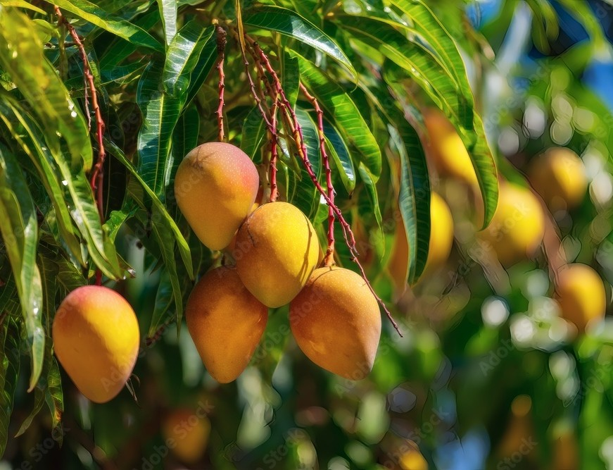

Mango

Mango is a tropical fruit tree famous for its sweet and juicy fruit. It requires warm, frost-free climates and well-drained, fertile soil.
- Water: Regular watering; more frequent during dry periods. Avoid waterlogging.
- Light: Full sun exposure essential for good fruit production.
- Soil: Deep, well-drained fertile soil with organic matter.
- Temperature: Thrives in tropical to subtropical regions.
- Growth: Large evergreen tree; requires space for growth and pruning for shape.
Tips: Fertilize regularly and protect young trees from strong winds and cold snaps.
Common Problems: Watch for fruit flies, powdery mildew, and root rot.